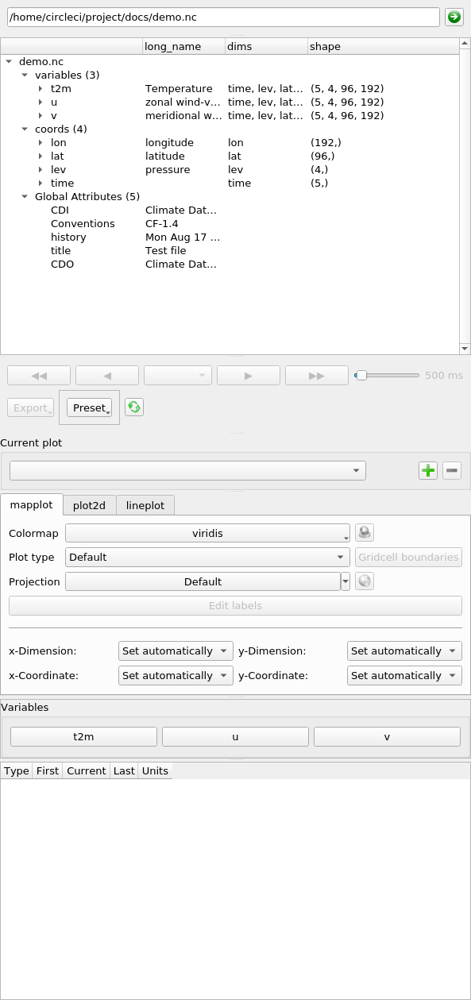
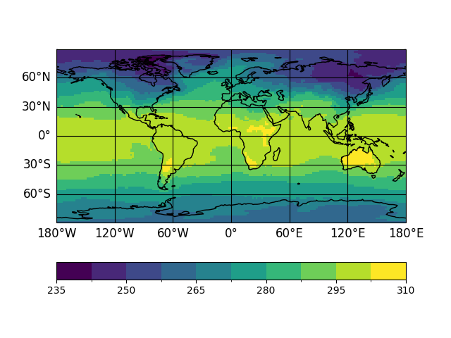
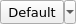

Getting started
Binder examples
You can run a demo of psy-view in your webbrowser by clicking  . This
will show you a remote desktop (after some time for launching the server) where
you can test psy-view (and the psyplot-gui) for different test files.
. This
will show you a remote desktop (after some time for launching the server) where
you can test psy-view (and the psyplot-gui) for different test files.
Uploading your own data
You can also upload your own data to visualize it on the binder instance. Once
you see the remote desktop, your URL will be something like
https://hub.gke2.mybinder.org/user/psyplot-psy-view-.../desktop/?token=....
open a new tab
take the URL from the previous tab and replace the last part from the url (
desktop/?token=...) withtree/Desktop).Now click the Upload button and select the file you want to upload
Upload the file
The file you uploaded will now appear on the desktop in the previous tab
Run it locally
Congratulations! You successfully installed psy-view on your system (if not, head over to Installation).
This small example shows you, how to make a simple georeferenced plot. You can
use the demo.nc file for this demo.
Start the GUI from the command line via:
psy-view demo.nc
A widget will open that looks like
You see a button for the t2m variable: . Click it, and it opens a plot like this:
{kind=link}
Now use the button to select a different colormap, edit the projection via the  button, or update the dimensions via the navigation buttons: , , and .
{kind=link}
{kind=link}
{kind=link}
{kind=link}
{kind=link}
{kind=link}
More documentation about the GUI elements is provided in our User guide. And if you are interested in the python code, checkout the API reference.